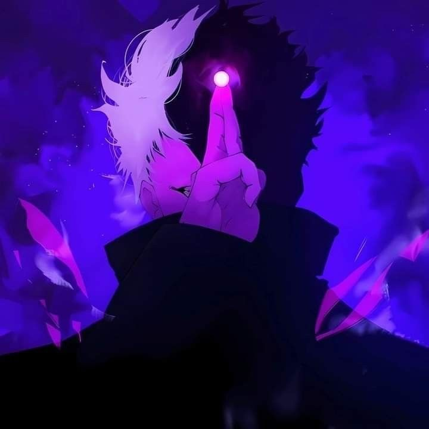

Halo. Saya seorang kreator independen yang berdomisili di Jawa Barat. Sebagai seorang INFP, saya memiliki ketertarikan mendalam pada eksplorasi imajinasi—baik melalui seni visual, jalinan narasi yang kompleks, maupun logika komputasi. Saya menuangkan ide-ide saya ke dalam berbagai medium untuk menciptakan sesuatu yang bermakna.

Mengeksplorasi seni visual dengan gaya seni yang terinspirasi dari manhwa dan webtoon Korea modern. Berfokus pada detail karakter, atmosfer, dan ekspresi emosional yang kuat.
Sebuah proyek penulisan naratif dengan struktur plot yang mendalam. Berpusat pada drama karakter, trauma masa lalu, dan misteri yang dikemas dengan kejutan cerita (plot twist) berlapis.
Pengembangan add-on edukasi interaktif. Proyek ini dirancang untuk mengajarkan logika pemrograman melalui command block dasar (mencakup 11% command fundamental) dan pengenalan JSON.